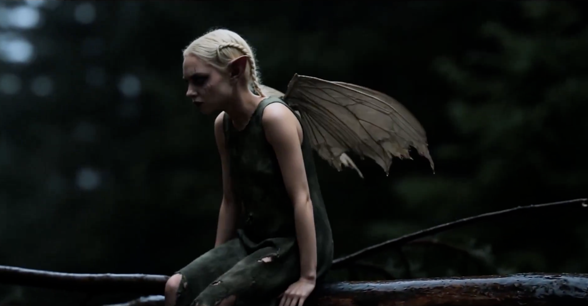
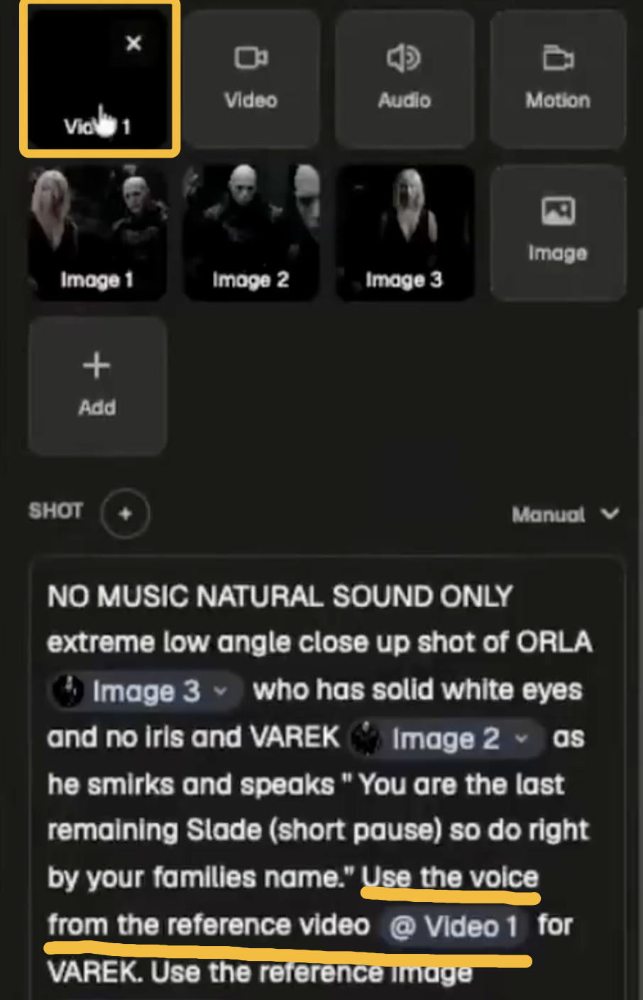
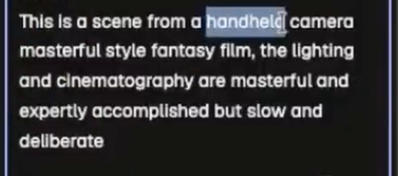
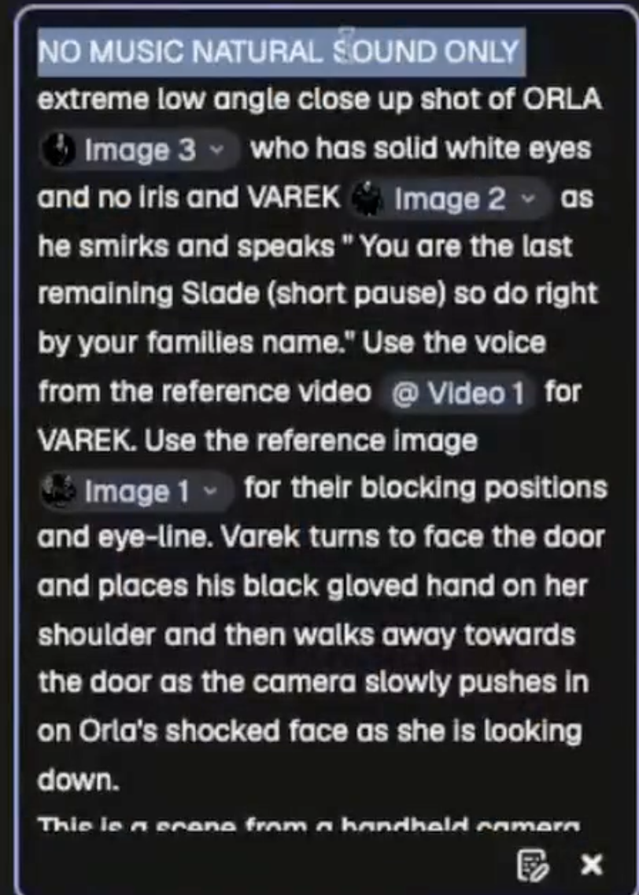

Kavan 的 AI 影片已经被数千万次观看。他是如何做到的？答案不在于用了多好的模型，而在于一套像传统电影制作一样严谨、但专为 AI 工具设计的工作流。
这 9 条技巧的底层逻辑
- 一致性是生命线 —— Style Bible + 固定照明描述 + 角色锁定细节
- 像真人拍摄一样迭代 —— 一个镜头生成 10-30 次，只用最好的 2 秒
- 描述动作，不描述效果 —— AI 懂物理规律，会生成更自然的结果
- 黑视频 Hack —— 最被低估的唇同步技巧
先建立 Style Bible
为每个角色生成特写（close-up）、中景（medium）、广角（wide）、正面和背面等多角度参考图。
锁定独特细节（如"solid white eyes"纯白色眼睛、疤痕等），防止 AI 生成时"漂移"（不一致）。
这为后续所有场景提供一致性基础。

为场景创建主广角参考
生成一个主广角（master wide）场景。
使用 Seedance 等工具做 360 度缓慢环绕（orbit），然后截图并 upscale（放大优化）。
这样你就拥有了场景的多个角度，便于后期构建连贯镜头。



语音黑视频 Hack
先录制演员或 Seedance 表演的 15 秒样本，获取真实语音。
将音频转为纯黑屏视频，再上传作为参考。
之后可以用这个声音让 AI 说出你输入的任何新台词，实现更好的唇同步（lip-sync）。

描述动作，不要直接要"效果"。AI 懂物理规律，会生成更真实的结果。—— Kavan the Kid
每个 prompt 使用一致的照明和摄影描述
所有 prompt 中重复相同的灯光（lighting）和电影摄影（cinematography）描述，锁定整体视觉风格。
场景方向保持简单，不要过度复杂化。
镜头方向越简单越好
不要在一个 prompt 里堆太多复杂指令。保持方向简单，让模型专注做好一件事。
描述动作而非直接要"效果"
描述血会触发审核，但描述动作——如"从眼球中爆裂喷出来"（it bursts out of the eyeball）——AI 懂得物理规律，会生成更真实、自然的结果。

像真人拍摄一样 Run Multiple Takes
将 AI 生成视为"现场拍摄"，生成 10-30 次不同版本。
下载最佳片段（即使只有 2 秒完美的微笑或表情），然后拼接（stitch together）使用。
Prompt 加入 "Natural Sound Only"
在生成时指定只用自然音效，获得干净的 Foley（拟音）效果，后期更容易编辑和混音。
像传统电影制作一样组织全流程
结合以上技巧：预先规划（Style Bible + 参考）→ 生成迭代 → 后期拼接编辑。
Kavan 用这种方法一个人在几周内做出 20 分钟原创叙事内容，产生数千万观看量。

一句话总结
AI 电影制作的核心不是模型有多强，而是你的工作流有没有按拍片的逻辑搭。Style Bible 建一致性、黑视频做唇同步、多次迭代只留最好的 2 秒、描述动作而非效果——这些才是从"AI 能动起来"到"几千万播放"之间的差距。